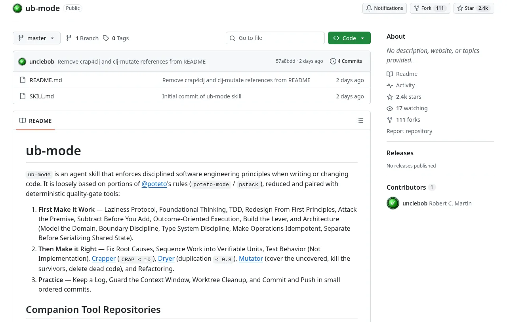

截至 2026-10-28 10:07 UTC+8（经 GitHub API 读取）：约 2.4k Star、111 Fork、3 个未关闭 Issue；仓库未声明任何许可证。
SKILL.md 全文。想用这份 skill，请到原仓库获取。它是什么
ub-mode 是一个“Agent skill”：一份带 YAML 头的 Markdown 文件，放进 Grok、Claude Code、Cursor 等编码 Agent 的 skills 目录后，用户输入 /ub-mode（或要求 Agent 遵循“reduced principles”）时，Agent 就会按里面的规则写代码、改代码。
README 的自我介绍是：一个在写代码或改代码时“enforces disciplined software engineering principles”的 skill，大致取材于 @poteto 的规则集（poteto-mode / pstack），做了删减，并与一组确定性的质量门（quality-gate）工具配对使用。
它的体量很小：SKILL.md 约 150 行，全是短句祈使句，没有示例代码，也没有脚本。真正“干活”的是 skill 点名要求调用的几个外部工具。
为什么会有它
背景要从 2026 年 10 月中旬说起。Uncle Bob 在 X 上分享自己在用 poteto 的 /poteto-mode（10-14 20:11 UTC+8），随后讨论集中到一个问题上：Agent 写代码那么快，人还要不要逐行读？他的回答很直接（10-15 21:15 UTC+8）：
You can't move at AI velocity if you spend your time reading the code. So you measure it.
意思是：以 AI 的速度开发，就不能把时间花在通读代码上，所以要度量它——用能给出足够洞察的工具来审视代码，从而不必一行行看也敢接受；当然，抽查依旧是好习惯。几天后（10-21 23:04 UTC+8）他进一步说明：代码仍必须足够干净，好让 Agent 后续能继续维护；手段就是一组衡量“代码质量”与“测试充分程度”的确定性工具，即 crapper、dryer、mutator，外加用 uml-viewer 看系统的整体结构。
同一天他描述了自己的工作流（10-21 22:59 UTC+8，获 1,200+ 赞）：先和 Agent 讨论系统、由 Agent 写出规格；Agent 用一两个小时做完他自己要一周才能做完的东西；然后让它们跑 crapper、dryer、mutator 检查——“它们会找出几十个 bug、疏漏和死代码”，同时把代码整理到好得多的状态。
有人追问“有没有现成的 skill 可以分享”，他贴出了 ub-mode 的开头（10-22 06:29 UTC+8）；10-26 00:04 UTC+8 正式建仓，几分钟后发帖（10-26 00:09 UTC+8）：这是他自己组合出来的 skill，效果不错，他的 grokbot 写代码时都在用。该帖两天内约 18 万次浏览、近 2,000 赞、2,880 收藏。
另一个背景是他的新书《Agentic Discipline》——据他说已交给出版社、预计冬季出版，书里也简短提到了 poteto-mode（10-15 21:08 UTC+8）。他的判断是：原则不变，因为那只是“plain old organizational principles”，Agent 和人一样喜欢井井有条的东西；变的是阈值（10-13 01:40 UTC+8）。ub-mode 可以看作这套想法的可执行版本。
安装与使用
- 把仓库里的
SKILL.md复制到你的 Agent 的 skills 目录，并放在名为ub-mode的子目录下，例如：~/.grok/skills/ub-mode/SKILL.md ~/.claude/skills/ub-mode/SKILL.md ~/.cursor/skills/ub-mode/SKILL.md - 在会话里输入
/ub-mode，或明确要求 Agent 按“reduced principles”做改动。 - 为了让 skill 里“使用 crapper / dryer / mutator”的步骤真正可执行，还需要把配套工具检出到本地（见下文）。它们都是 Python 实现、首次运行自动建
.venv，支持 Clojure、Java、Go、TypeScript、Rust、Python。注意 mutator 要求 crapper 检出在相邻目录../crapper。
一个最小的上手方式（示意，按你的目录习惯调整）：
git clone --depth 1 https://github.com/unclebob/ub-mode
mkdir -p ~/.claude/skills/ub-mode && cp ub-mode/SKILL.md ~/.claude/skills/ub-mode/
cd ~/tools && for r in crapper dryer mutator; do git clone --depth 1 https://github.com/unclebob/$r; done核心思想：三段式
SKILL.md 的第一条规定是：每次被要求做改动，都依次执行三件事——先让它能跑，再让它正确，并始终遵守“实践”。这正是 Kent Beck 那句老话“Make it work, make it right, make it fast”的 Agent 版，只是第三步换成了工作习惯。下面按原文结构概述（标题保留英文原名，内容为本站转述）。
一、First Make it Work（先让它能跑）
| 原则 | 大意（转述） |
|---|---|
| Laziness Protocol | 一个决定只放在一个地方；只交付能解决问题的最小改动。 |
| Foundational Thinking | 先把数据形状定对再写逻辑；先做对后续每个阶段都有帮助的事；会有并发写入者时就别共享状态。 |
| TDD | 改代码前先写失败的测试，确认它因预期原因失败，再做让它通过的最小改动；如果写不出诚实的测试，宁可不写也不写烂测试。 |
| Redesign From First Principles | 新需求不要硬拴在旧设计上；设想“如果一开始就有这个需求会怎么建”，想清楚后分块交付。 |
| Attack the Premise | 当两个基于同一前提的修复都卡在同一个质量门上，就把这个前提写成一句话、清点是谁在维持这种失衡，先拿掉它，再谈下一个修复。 |
| Subtract Before You Add | 加东西之前先减复杂度。 |
| Outcome-Oriented Execution | 瞄准可检验的终态；中途短暂“打断”可以接受，前提是计划过且可回退。 |
| Build the Lever | 工作一眼看不透时，就先造工具；先手工做一个单元，再让工具复现它。 |
| Architecture | 五条子规则：用结构让非法状态无法表示并维护领域术语表（Model the Domain）；数据在入口校验、内部信任、业务逻辑放进纯函数（Boundary Discipline）；让非法值写不出来、外部数据只解析一次、不压制编译器（Type System Discipline）；操作幂等，重复执行或半途崩溃后重跑结果一致；能不共享可变状态就各给一份，必须共享就只允许一个写者并用结构保证。 |
二、Then Make it Right（再让它正确）
| 原则 | 大意（转述） |
|---|---|
| Fix Root Causes | 先复现、再修根因；只是把崩溃藏起来的防护代码不算修复。 |
| Sequence work into verifiable units | 做完一个小单元并验证，再开始下一个。 |
| Test Behavior, Not Implementation | 测试要像真实调用方那样调用代码、检查调用方能看到的结果；原文给了一个很好用的判别法——如果所有函数都返回空值时这个测试仍会通过，就扔掉它。 |
| Crapper | 运行 crapper，把每个函数的 CRAP 分数压到 10 以下：拆分、补测试，或两者都做；并权衡 case/分支语句是否值得削减。 |
| Dryer | 运行 dryer，消除相似度 ≥ 0.8 的重复代码。 |
| Mutator | 运行 mutator：覆盖未覆盖的代码、杀死存活的变异体、删除死代码。 |
| Refactoring | 先把现有行为钉住，再改结构，最后证明行为没变。 |
三、Practice（实践）
- Keep a Log：记录每个动作及其理由，完成时汇报这份日志。
- Guard the Context Window：保持主线程精简，把大块工作分出去，只留摘要——这是专门针对 LLM 上下文窗口的规则。
- Worktree Cleanup：确认没有在用的东西依赖它之后再回收磁盘；未提交的工作要等人来决定。
- Commit and Push：小步、有序地频繁提交；每个提交写清为什么、改了什么、如何证明；最后推到主线。
配套的确定性质量门
ub-mode 的关键设计是：“正确”由机器判定。规则里的阈值（CRAP < 10、重复度 < 0.8、无存活变异体）都对应一把可以在 CI 或本地反复运行、结果可复现的工具。四个配套仓库（据各自 README 概述）：
| 工具 | 做什么 | 要点 |
|---|---|---|
| crapper | 按函数计算圈复杂度、测试覆盖率与 CRAP 分数 | 公式 CRAP = CC² × (1 − coverage)³ + CC；结果写入 .metrics/crap.edn；支持 --changed 只看改动、--threshold 超限时以退出码 2 失败。 |
| dryer | 找结构性重复代码 | 对规范化后的语法结构指纹做 Jaccard 相似度；局部变量名、字面量等会被抹掉，只保留调用名、运算符和树形。工具自身默认阈值 0.82，ub-mode 要求处理 ≥ 0.8 的配对。 |
| mutator | 变异测试 | 测试失败或超时即“杀死”变异体，测试仍通过即“存活”；未被覆盖的位点不跑；之后的运行是增量的。退出码 3 表示有存活变异体。 |
| uml-viewer | 可交互的动态 UML | 读取上面几个工具写入的 .metrics/ 快照，用颜色标出 CRAP 与变异分数；依赖若从高层指向低层会标红（Clean Architecture 的依赖规则）；可与 Agent 联动做“如果这样改架构会怎样”的推演。 |
这几个工具都是早先单语言版本（crap4clj、crap4java、crap4go、dry4clj、clj-mutate、mutate4go、mutate4java 等）的多语言统一版，共用同一套命名空间/函数命名，因此可以互相拼接数据。
一个典型回合是什么样子
以下是本站按 skill 规则推演的示意流程（非原作者提供）。假设你让 Agent“给订单服务加上退款功能”，并启用了 /ub-mode：
- Work：Agent 先看数据形状——退款应该是订单状态机里的一个合法转移，而不是一个可以随便置位的布尔字段（让非法状态不可表示）；先写一个“已发货订单可以退款、未支付订单不能退款”的失败测试，看它因“缺少退款能力”而失败，再写最小实现让它通过；外部请求在入口处一次性解析校验，退款计算放进纯函数，并保证重复提交同一退款请求结果一致（幂等）。
- Right：跑
./crapper --changed，发现某个函数 CRAP = 18，于是拆分并补测试；跑./dryer --changed，发现退款和取消逻辑有 0.86 的结构重复，于是抽出共用部分；跑./mutator，看到把>改成>=的变异体仍然存活，说明边界没测到，补一个边界测试把它杀死。 - Practice：整个过程留下动作日志；按“测试 → 实现 → 重构”拆成几个小提交，每条提交说明原因、改动和验证方式；最后推送并清理临时 worktree。
这里最值得注意的是第 2 步：Agent 不需要你去“看看代码写得好不好”，它自己就能拿到数字、对照阈值、继续改，直到数字过关。这正是 Uncle Bob 说的“measure it”。
设计取舍与读后注记
- 短到能常驻上下文。整份 skill 都是一行一句的命令式短句，没有长篇解释。对 Agent 来说，这比一本《Clean Code》更容易持续遵守，也不会挤占上下文窗口——这与它自己的“Guard the Context Window”一致。
- “减法版”的 poteto-mode。README 明说它只取了 poteto 规则的一部分并做了缩减；新增的部分主要是把三把度量工具写进流程，让主观的“干净代码”变成客观的门槛。
- 原则不变，阈值可调。CRAP 10、相似度 0.8 都是作者当下的选择；他也说过 Agent 时代的阈值可能和人类时代不同。团队采用时可以按自己的代码库调整。
- 适用边界。配套工具目前覆盖 Clojure、Java、Go、TypeScript、Rust、Python 六种语言；其他语言只能用到 skill 的文字纪律部分。mutator 首次全量运行可能很慢，作者建议先从正在改的文件开始。
- 争议点。“不读代码、只度量代码”在评论区引起不少反对，认为 Agent 仍会以各种方式制造“slop”。作者的回应基本是：那就别放行——设好门槛，不让它通过。
相关链接
- 原仓库：github.com/unclebob/ub-mode（README.md、SKILL.md）
- 发布帖：x.com/unclebobmartin/status/2114388856976069095
- 配套工具：crapper · dryer · mutator · uml-viewer
- 灵感来源：@poteto（poteto-mode / pstack）
- 站内相关：Thorsten Ball：我如何与 Agent 一起工作